<!DOCTYPE html>
<html lang="en">
<head>
  <meta charset="utf-8">
  <meta name="viewport" content="width=device-width, initial-scale=1.0">
  <title>Pages 25-38 - Class 7 Social science</title>
  <style>

:root {
  --bg-color: #fcfcfd;
  --card-bg: #ffffff;
  --text-color: #1e293b;
  --text-muted: #64748b;
  --primary-color: #0284c7;
  --primary-light: #e0f2fe;
  --border-color: #e2e8f0;
  --radius: 10px;
  --shadow: 0 4px 6px -1px rgb(0 0 0 / 0.05), 0 2px 4px -2px rgb(0 0 0 / 0.05);
}

body {
  font-family: -apple-system, BlinkMacSystemFont, "Segoe UI", Roboto, "Noto Sans Malayalam", "Manjari", "Gayathri", sans-serif;
  background-color: var(--bg-color);
  color: var(--text-color);
  line-height: 1.8;
  font-size: 1.1rem;
  margin: 0;
  padding: 0;
}

.container {
  max-width: 860px;
  margin: 0 auto;
  padding: 2.5rem 1.5rem 5rem 1.5rem;
}

header {
  margin-bottom: 2.5rem;
  padding-bottom: 1.5rem;
  border-bottom: 2px solid var(--border-color);
}

.badge-row {
  display: flex;
  gap: 0.5rem;
  margin-bottom: 0.75rem;
  flex-wrap: wrap;
}

.badge {
  display: inline-block;
  font-size: 0.75rem;
  font-weight: 700;
  text-transform: uppercase;
  letter-spacing: 0.05em;
  padding: 0.25rem 0.65rem;
  border-radius: 9999px;
  background: var(--primary-light);
  color: var(--primary-color);
}

.badge-medium {
  background: #fef3c7;
  color: #b45309;
}

.badge-class {
  background: #dcfce7;
  color: #15803d;
}

h1 {
  font-size: 2.1rem;
  font-weight: 800;
  margin: 0.5rem 0 1rem 0;
  line-height: 1.3;
  color: #0f172a;
}

.nav-bar {
  display: flex;
  justify-content: space-between;
  margin: 1.5rem 0;
  font-size: 0.95rem;
  flex-wrap: wrap;
  gap: 0.5rem;
}

.nav-bar a {
  color: var(--primary-color);
  text-decoration: none;
  font-weight: 600;
  padding: 0.5rem 1rem;
  border-radius: var(--radius);
  background: var(--card-bg);
  border: 1px solid var(--border-color);
  transition: all 0.2s ease;
}

.nav-bar a:hover {
  background: var(--primary-light);
  border-color: var(--primary-color);
}

.nav-bar .disabled {
  color: var(--text-muted);
  pointer-events: none;
  border-color: transparent;
  background: transparent;
}

.page-section {
  background: var(--card-bg);
  border: 1px solid var(--border-color);
  border-radius: var(--radius);
  box-shadow: var(--shadow);
  padding: 2rem;
  margin-bottom: 2.5rem;
}

.page-header {
  display: flex;
  align-items: center;
  justify-content: space-between;
  margin-bottom: 1.25rem;
  padding-bottom: 0.5rem;
  border-bottom: 1px dashed var(--border-color);
}

.page-number {
  font-size: 0.8rem;
  font-weight: 700;
  text-transform: uppercase;
  color: var(--text-muted);
  letter-spacing: 0.05em;
}

.page-content p {
  margin: 0 0 1.25rem 0;
  white-space: pre-wrap;
  word-break: break-word;
}

.page-content p:last-child {
  margin-bottom: 0;
}

.diagram-card {
  margin: 2rem 0;
  text-align: center;
  background: #f8fafc;
  border: 1px solid var(--border-color);
  border-radius: var(--radius);
  padding: 1rem;
  overflow: hidden;
}

.diagram-card img {
  max-width: 100%;
  height: auto;
  border-radius: calc(var(--radius) - 4px);
  display: inline-block;
  box-shadow: 0 2px 4px rgba(0,0,0,0.04);
}

.diagram-card figcaption {
  font-size: 0.85rem;
  color: var(--text-muted);
  margin-top: 0.75rem;
  font-weight: 500;
}

footer {
  margin-top: 3rem;
  padding-top: 2rem;
  border-top: 2px solid var(--border-color);
}

  </style>
</head>
<body>
  <div class="container">
    <header>
      <div class="badge-row">
        <span class="badge badge-class">Class 7</span>
        <span class="badge badge-medium">English Medium</span>
        <span class="badge">Social science</span>
        <span class="badge">Part 1</span>
      </div>
      <h1>Pages 25-38</h1>
      <div class="nav-bar"><a href="part_1_pages_124.html">← Pages 1-24</a><a href="index.html">☰ Index</a><a href="part_1_pages_3953.html">Pages 39-53 →</a></div>
    </header>
    <main>
<section class="page-section" id="page-25">
  <div class="page-header"><span class="page-number">Page 25</span></div>
  <figure class="diagram-card" id="fig_ch02_p025_01"><figcaption>Figure fig_ch02_p025_01 (Page 25)</figcaption></figure>
  <figure class="diagram-card" id="fig_ch02_p025_02"><figcaption>Figure fig_ch02_p025_02 (Page 25)</figcaption></figure>
  <figure class="diagram-card" id="fig_ch02_p025_03"><figcaption>Figure fig_ch02_p025_03 (Page 25)</figcaption></figure>
  <figure class="diagram-card" id="fig_ch02_p025_04"><figcaption>Figure fig_ch02_p025_04 (Page 25)</figcaption></figure>
  <div class="page-content">
    <p>2<br>Tamil lyrics<br>Koneri Vazhum Kurukai Pirappen <br>Thiruvengadachoonayil Meenayi Pirakkum <br>Venkadathu chempakamayi nirkkum <br>Venkatamalaimel thambhamayi <br> Kovilin vasalil padiyayi kidanthum<br>Kulasekhara Alvar<br>&#x27;Perumal Thirumozhi&#x27;<br>Translation<br>I wish to be born as a dove, <br>to live on this hill, <br>To be born as a fish in the pond at <br>Tiruvenkata hills, <br>To stand as a chembaka flower there, <br>To stand as a pillar on top of Venkata Hill, <br>To lie down as a step at the <br>door of that temple.<br>The above verse is from &#x27;Perumal Tirumozhi&#x27;, written by Kulasekhara Alvar, a <br>Bhakta poet who lived in Kerala in the 9th century.<br>What is the theme behind these lines?<br>Bhakti is the total submission of one&#x27;s life to God. The ideas and activities that <br>arise out of Bhakti are known as Bhakti movement.<br>The conservative outlook and the caste system that prevailed in medieval India <br>perpetuated discrimination among the people. <br>Medieval India: <br>Cultural Movements</p>
  </div>
</section>
<section class="page-section" id="page-26">
  <div class="page-header"><span class="page-number">Page 26</span></div>
  <div class="page-content">
    <p>- Part 1<br>26<br>VII<br>Social Science<br>The social groups subjected to caste discrimination were attracted to the Bhakti <br>movement. Gradually, at different times there occured synthesis of various visions <br>and practices in India. In this chapter, we shall discuss the two important cultural <br>movements that spread across India during the medieval period, that is Bhakti-Sufi <br>movements.<br>Bhakti movement in South India<br>Bhakta poets who lived in South India composed hymns and devotional songs that <br>express unwavering devotion to their favourite deity. These Bhakta poets were <br>devotees of Vishnu known as Alvars and devotees of Shiva known as Nayanars. <br>Let&#x27;s see the characteristics of this movement that existed between the 7th and 12th <br>centuries CE.<br>Composition <br>and singing of <br>devotional songs in <br>vernacular <br>languages<br>Bhakti <br>Movement in<br>South <br>India<br>Love and <br>Submission to <br>God<br>Deep devotion <br>to the beloved<br> deity<br>Equal <br>participation of <br>women<br>Access to all <br>irrespective <br>of caste</p>
  </div>
</section>
<section class="page-section" id="page-27">
  <div class="page-header"><span class="page-number">Page 27</span></div>
  <figure class="diagram-card" id="fig_ch02_p027_01"><figcaption>Figure fig_ch02_p027_01 (Page 27)</figcaption></figure>
  <figure class="diagram-card" id="fig_ch02_p027_02">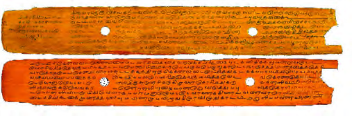<figcaption>Figure fig_ch02_p027_02 (Page 27)</figcaption></figure>
  <div class="page-content">
    <p>27<br>Medieval India: Cultural Movements<br>The Bhakti movement emerged as a popular movement in Tamil Nadu. Alvars <br>and Nayanars travelled from place to place singing devotional songs in vernacular <br>languages which helped in spreading devotion among people. The compositions <br>of Bhakta poets had a great impact on the common people when evil practices <br>and inequality were dominant. The meaningless customary practices that prevailed <br>in the society were questioned. <br>Irrespective of caste, all sections <br>of the society were attracted <br>to the Bhakti movement. The <br>writings of Alvars and Nayanars <br>popularised Hinduism.<br>The writings of the Alvars came to be known as &#x27;Nalayira Divyaprabandham&#x27;, <br>while the writings of the Nayanars were titled as &#x27;Thirumuraikal&#x27;. Many temples <br>were also built during this period.<br>Prominent poets of the Bhakti movement<br>Kulasekhara Alvar<br>Periyalvar<br>Nammalvar<br>Andal<br>Devotees of <br>Vishnu <br>(Alvars)<br>Prominent poets of the <br>Bhakti movement<br>Karaikal Ammayar <br>Appar<br>Sambandar <br>Sundarar<br>Manikkavasagar<br>Devotees of Shiva <br>(Nayanars)<br>Make a note on the changes that South Indian Bhakti movement <br>brought about in the social system.<br>The Bhakti movement gradually started spreading to different parts of India. Let&#x27;s <br>get to know the propagators of the Bhakti movement in different regions.<br>Basavanna: Philanthropist of Kannada Desa<br>Attached below is the depiction of a discussion that took place in the &#x27;Anubhava <br>Mandapam&#x27;, the forum set up by Basavanna. Note the figure.<br>Fig. 2.1 <br>Manuscript of Thevaram found in 1700 CE <br>from a Shiva temple in Tamil Nadu</p>
  </div>
</section>
<section class="page-section" id="page-28">
  <div class="page-header"><span class="page-number">Page 28</span></div>
  <figure class="diagram-card" id="fig_ch02_p028_01">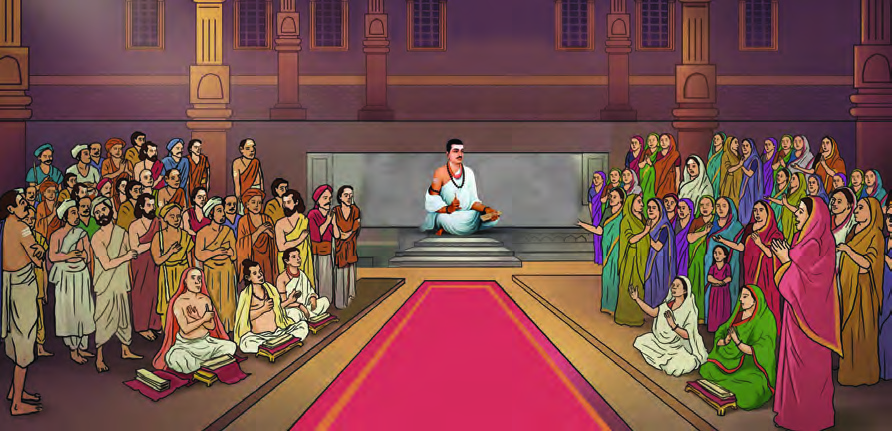<figcaption>Figure fig_ch02_p028_01 (Page 28)</figcaption></figure>
  <figure class="diagram-card" id="fig_ch02_p028_02"><figcaption>Figure fig_ch02_p028_02 (Page 28)</figcaption></figure>
  <div class="page-content">
    <p>- Part 1<br>28<br>VII<br>Social Science<br>What can be <br>done to liberate <br>those who follow <br>superstitions?<br>Is it right to <br>discriminate <br>people by birth <br>and occupation?<br>Girls&#x27; education <br>and marriage <br>after puberty are <br>important for <br>social progress<br>Isn&#x27;t child <br>marriage a <br>hindrance to <br>girls&#x27; health and <br>education?<br>Rational thinking <br>and experiences <br>foster spiritual <br>progress and free <br>thinking.<br>Caste-based <br>discrimination <br>prevents<br>social progress.<br>Fig. 2.2 <br>Basavanna&#x27;s discussion with the people in Anubhava Mandapam. <br>(In the artist&#x27;s imagination)<br>Anubhava Mandapam<br>Anubhava Mandapam was a spiritual forum founded by Basavanna <br>in the 12th century CE. Allama Prabhu and Akka Mahadevi led <br>the discussions in the Anubhava Mandapam. Everyone was <br>allowed to participate in the discussions irrespective of caste and <br>gender. People used to come to Anubhava Mandapam for spiritual <br>discussions and renewal of knowledge. The ideas that emerged <br>in the discussion were conveyed to the people in the name of <br>&#x27;Vachanas&#x27;.<br>List out the key features of the social conditions during that period.<br>	<br>Caste discrimination existed<br>Basavanna was a philosopher, social reformer and poet who lived in Kannada <br>Desa in the 12th century. He decided to make people aware of the social and <br>religious discrimination that existed in the society and endeavoured to wipe them <br>out. Basavanna put forward a vision based on freedom, equality and social justice. <br>Through the Vira Shaiva movement founded by him, he co-ordinated these ideas.</p>
  </div>
</section>
<section class="page-section" id="page-29">
  <div class="page-header"><span class="page-number">Page 29</span></div>
  <figure class="diagram-card" id="fig_ch02_p029_01"><figcaption>Figure fig_ch02_p029_01 (Page 29)</figcaption></figure>
  <figure class="diagram-card" id="fig_ch02_p029_02"><figcaption>Figure fig_ch02_p029_02 (Page 29)</figcaption></figure>
  <figure class="diagram-card" id="fig_ch02_p029_03"><figcaption>Figure fig_ch02_p029_03 (Page 29)</figcaption></figure>
  <figure class="diagram-card" id="fig_ch02_p029_04">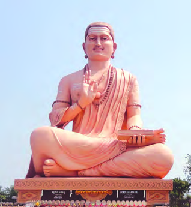<figcaption>Figure fig_ch02_p029_04 (Page 29)</figcaption></figure>
  <div class="page-content">
    <p>29<br>Medieval India: Cultural Movements<br>The major activities of the Vira Shaiva movement are given below.<br>	<br>Brahminical supremacy and the authenticity <br>of the Vedas were questioned.<br>	<br>People were educated against caste <br>discrimination and discrimination against <br>women.<br>	 Monotheism was encouraged.<br>	 Convinced the people about the greatness of <br>work and labour.<br>	 He opposed child marriage and encouraged <br>marriage after puberty and widow remarriage.<br>Basavanna&#x27;s messages highlighting <br>humanism and equality<br>	 If thought and action are good, the nation will prosper.<br>	 All human beings have equal rights irrespective of caste.<br>	 Intermediaries are not required to worship God.<br>	 There is no rebirth, live this life blissfully.<br>The Vira Shaiva movement questioned the caste system and <br>inequalities. Evaluate this statement.<br>Kabir: Propagator of Human Harmony<br>Read these lines…<br>The Almighty is known by many names<br>Like Allah, Ram, Karim, Kesav, Hari, Hazrath<br>Aren&#x27;t the bangles and rings, nothing but forms of gold?<br>Variety lies in names, we call them.<br>Share the ideas you have discovered…<br>These are the lines by Kabir, propagator of the Bhakti movement who lived in <br>Northern India (present-day Uttar Pradesh) in the 15th century.<br>Fig. 2.3 <br>Statue of Basavanna erected <br>at Basava Kalyan, Karnataka</p>
  </div>
</section>
<section class="page-section" id="page-30">
  <div class="page-header"><span class="page-number">Page 30</span></div>
  <figure class="diagram-card" id="fig_ch02_p030_01">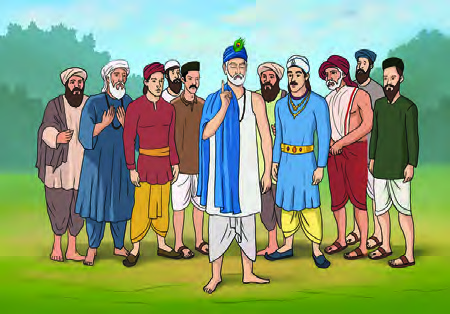<figcaption>Figure fig_ch02_p030_01 (Page 30)</figcaption></figure>
  <figure class="diagram-card" id="fig_ch02_p030_02">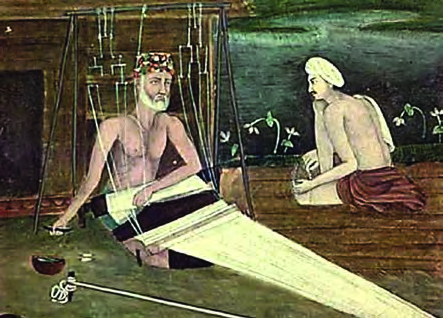<figcaption>Figure fig_ch02_p030_02 (Page 30)</figcaption></figure>
  <div class="page-content">
    <p>- Part 1<br>30<br>VII<br>Social Science<br>Kabir propagated his ideas through such hymns known as &#x27;Dohas&#x27;. Kabir&#x27;s dohas <br>were very popular with the masses as he composed his hymns in a language that <br>common people could understand.<br>Kabir stood for Hindu-Muslim unity <br>and brotherhood. He reminded that the <br>Hindus and Muslims are two vessels <br>made of the same soil. He argued that <br>caste system, untouchability, religious <br>rituals, post-death rites, idol worship <br>etc. were meaningless. Kabir criticized <br>all kinds of discrimination based on <br>caste, religion, race, legacy, wealth etc. <br>Kabir&#x27;s thoughts and activities were <br>immensely influenced by Bhakti-Sufi <br>ideas. He rejected religious traditions completely. He also ignored the external <br>rituals of religions. Kabir, who believed in formless God, propagated Bhakti as a <br>means of salvation.<br>Kabir travelled from place to place with his disciples to spread his ideas. Read <br>some of his experiences during such travels.<br>Once, Kabir inquired of a grieving <br>village chieftain. He said: &quot;It&#x27;s <br>Karma, what else to say? People <br>are dying of smallpox. Sorcery is <br>the remedy.<br>Kabir laughed and said. “A spell for <br>healing? None of this can be solved <br>by magical spell. Only treatment <br>can cure the disease&quot;.<br>On <br>another <br>occasion, <br>people <br>started giving gifts to Kabir and his <br>disciples. He said: &quot;We are weavers, metalworkers, woodcutters, farmers and <br>cobblers. We do work and live. We do not need gifts&quot;.<br>Fig. 2.5 <br>Kabir and his disciples with the village chieftain<br>Fig. 2.4 <br>Kabir engaged in weaving <br>(From the Jaipur Museum collection)</p>
  </div>
</section>
<section class="page-section" id="page-31">
  <div class="page-header"><span class="page-number">Page 31</span></div>
  <figure class="diagram-card" id="fig_ch02_p031_01"><figcaption>Figure fig_ch02_p031_01 (Page 31)</figcaption></figure>
  <figure class="diagram-card" id="fig_ch02_p031_02">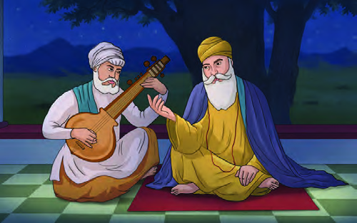<figcaption>Figure fig_ch02_p031_02 (Page 31)</figcaption></figure>
  <div class="page-content">
    <p>31<br>Medieval India: Cultural Movements<br>You have read Kabir&#x27;s Doha and stories. Add your findings below.<br>	 People call God by different names.<br>	<br>Kabir made people think against superstitions.<br>	<br>To what extent did Kabir&#x27;s ideas help to promote equality and <br>religious harmony among the people? <br>Organize a discussion.<br>Guru Nanak: Love and brotherhood<br>Once, Guru Nanak and Bhai Mardana came to rest at Sajjan Thug&#x27;s inn. He <br>had a habit of robbing those who stayed there. Knowing this Guru Nanak did <br>not want to rest for the night. Instead, they started singing &#x27;Shabad&#x27;, prayer <br>songs composed by Guru Nanak. The recital meant it was unjust to loot <br>others&#x27; wealth. Sajjan Thug <br>realized his mistake when <br>he listened to the lyrics of <br>the song. He begged Guru <br>for forgiveness. Guru Nanak <br>advised him to give back all <br>the stolen wealth to the poor <br>and to live honestly. Then on, <br>Sajjan began a life helping <br>those who visited his inn.<br>Fig. 2.6 <br>Guru Nanak and Bhai Mardana<br>What ideas did you get from this story?</p>
  </div>
</section>
<section class="page-section" id="page-32">
  <div class="page-header"><span class="page-number">Page 32</span></div>
  <figure class="diagram-card" id="fig_ch02_p032_01"><figcaption>Figure fig_ch02_p032_01 (Page 32)</figcaption></figure>
  <figure class="diagram-card" id="fig_ch02_p032_02"><figcaption>Figure fig_ch02_p032_02 (Page 32)</figcaption></figure>
  <figure class="diagram-card" id="fig_ch02_p032_03">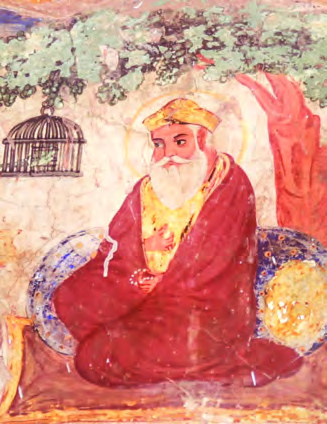<figcaption>Figure fig_ch02_p032_03 (Page 32)</figcaption></figure>
  <figure class="diagram-card" id="fig_ch02_p032_04">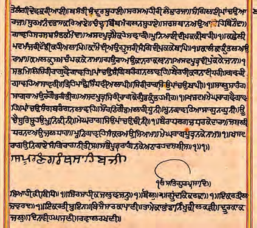<figcaption>Figure fig_ch02_p032_04 (Page 32)</figcaption></figure>
  <div class="page-content">
    <p>- Part 1<br>32<br>VII<br>Social Science<br>Guru Nanak was born in 15th century in the village <br>of Talwandi (now in Pakistan) in Sheikhpura, <br>Punjab. Guru Nanak attempted to harmonize the <br>ideas of different religions. He travelled within <br>and outside India to propagate his thoughts.<br>Guru Nanak was against the meaningless <br>religious rituals. He attempted to propagate the <br>message of One God. He promoted the ideals <br>of equality, brotherhood, love, goodness, and <br>religious tolerance. Caste discrimination, idolatry, <br>pilgrimage etc. were rejected by him. Economic <br>inequality was questioned and people were <br>encouraged to abstain from using intoxicants. <br>He emphasized the importance of the &#x27;Langar&#x27; or <br>community kitchen where all classes of people <br>could eat together. His ideas later paved the way for the formation of Sikhism.<br>Make a note on the methods adopted by Guru Nanak to propagate the <br>ideas of religious tolerance and universal brotherhood.<br>In short, the social and religious activities of Kabir and Guru Nanak ushered in a <br>period of cultural harmony in medieval India.<br>Guru Granth Sahib manuscript, 1704 CE.<br>&#x27;Adi Granth&#x27; (Guru Granth Sahib) is the <br>holy book of Sikhism. The &#x27;Adi Granth&#x27; <br>contains writings of all <br>the Sikh Gurus beginning <br>from Guru Nanak. The <br>importance of monotheism <br>and thoughts against caste-<br>gender-race discrimination <br>are embedded in it. The ideas of <br>Jainism, Buddhism, Islam, etc. are <br>included in the &#x27;Adi Granth&#x27;.<br>Fig. 2.7 <br>The mural of Guru Nanak at the Baba Atal <br>Gurudwara in Amritsar.</p>
  </div>
</section>
<section class="page-section" id="page-33">
  <div class="page-header"><span class="page-number">Page 33</span></div>
  <figure class="diagram-card" id="fig_ch02_p033_01"><figcaption>Figure fig_ch02_p033_01 (Page 33)</figcaption></figure>
  <figure class="diagram-card" id="fig_ch02_p033_02"><figcaption>Figure fig_ch02_p033_02 (Page 33)</figcaption></figure>
  <figure class="diagram-card" id="fig_ch02_p033_03">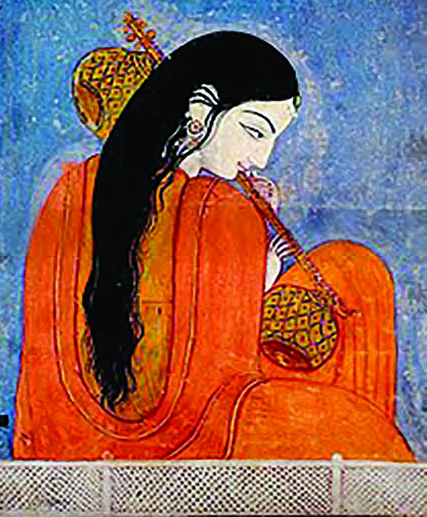<figcaption>Figure fig_ch02_p033_03 (Page 33)</figcaption></figure>
  <div class="page-content">
    <p>33<br>Medieval India: Cultural Movements<br>Women and the Bhakti Movement<br>:RPHQZHUHOHVVUHFRJQL]HGDQGUHVSHFWHGLQWKHPHGLHYDOVRFLHW\&amp;RQGLWLRQV<br>UHPDLQHGWKHVDPHLQUHODWLRQWRIUHHGRPRIZRUVKLS:LWKWKHDGYHQWRI%KDNWL<br>movement, many women took to <br>FRPSRVLQJDQGVLQJLQJK\PQVDQGVRQJV<br>WRZRUVKLSWKHGHLW\RIWKHLUFKRLFH<br>0LUDEDLZDVD5DMSXWSULQFHVVZKROLYHG<br>LQ&amp;KLWWRU5DMDVWKDQ6KHJDYHXSDOOWKH<br>ZRUOGO\FRPIRUWVDQGLPPHUVHGKHUVHOI<br>LQGHYRWLRQWR.ULVKQD.ULVKQD%KDMDQV<br>FRPSRVHGE\0LUDEDLDUHYHU\SRSXODU<br>Karaikkal Ammayar and Andal were <br>IDPRXVGHYRWHHSRHWHVVHVVIURP7DPLO<br>1DGX 7KHLU FRPSRVLWLRQV H[SUHVVHG<br>GHHSGHYRWLRQWRWKHLUIDYRXULWHGHLW\<br>$NND0DKDGHYLZDVDSURPLQHQW¿JXUH<br>LQ WKH 9LUD 6KDLYD PRYHPHQW 6KH<br>led discussions against the social and <br>VSLULWXDORSSUHVVLRQWKHZRPHQIDFHGLQ<br>WKRVHGD\V<br>%DKLQDEDLDQG6R\DUDEDLRI0DKDUDVKWUDDQG/DO&#x27;HGRI.DVKPLUDOVRFRQWULEXWHG<br>WRWKHJURZWKRIWKH%KDNWLPRYHPHQW<br>&#x27;LVFXVV WKH VLJQL¿FDQW UROH RI 0LUDEDL$NND 0DKDGHYL HWF LQ WKH<br>JURZWKRIWKH%KDNWLPRYHPHQW<br>Impacts of the Bhakti Movement<br>7KHDLPRIWKH%KDNWLPRYHPHQWZDVGHGLFDWLRQWRRQH<br>VIDYRXULWHGHLW\WKURXJK<br>PXVLF DQG GHYRWLRQ +RZHYHU ODWHU WKH PRYHPHQW ZDV DEOH WR EULQJ DERXW<br>SURJUHVVLYHFKDQJHVLQ,QGLD<br>VVRFLDODQGUHOLJLRXVVSKHUHV<br>0RVW RI WKH %KDNWL SRHWV LQ WKH %KDNWL PRYHPHQW ZHUH IURP WKH VR FDOOHG<br>PDUJLQDOLVHGFDVWHJURXSV7KH\TXHVWLRQHGFDVWHV\VWHPDQGWKHSULYLOHJHVHQMR\HG<br>E\ WKH %UDKPLQV$V D UHVXOW WKH FRQFHSW RI VRFLDO HTXDOLW\ EHJDQ WR HPHUJH<br>:RPHQZHUHDOORZHGWRSDUWLFLSDWHLQGLVFXVVLRQVLQWKHAnubhava Mandapam<br>Fig. 2.8 <br>Mirabai - Kangra painting of <br>Himachal Pradesh<br>ST-351-3-SOC. SCI. (E)-7-VOL-1</p>
  </div>
</section>
<section class="page-section" id="page-34">
  <div class="page-header"><span class="page-number">Page 34</span></div>
  <figure class="diagram-card" id="fig_ch02_p034_01"><figcaption>Figure fig_ch02_p034_01 (Page 34)</figcaption></figure>
  <figure class="diagram-card" id="fig_ch02_p034_02"><figcaption>Figure fig_ch02_p034_02 (Page 34)</figcaption></figure>
  <div class="page-content">
    <p>- Part 1<br>34<br>VII<br>Social Science<br>Their opinions gained recognition and made them think about the idea of equality <br>between men and women. The Bhakti movement was also able to educate people <br>about the greatness of occupation.<br>Sufi Movement<br>Jalaluddin Khilji, the Sultan of Delhi, revealed his desire to Amir <br>Khusru to meet Sheikh Nizamuddin Auliya. The Sultan insisted that <br>the meeting should be kept secret as Auliya would refuse to meet <br>him, if he comes to know about it. But Khusru told this to Auliya. <br>Auliya, who did not like to meet rulers, travelled far on the day of the visit. <br>On reaching the Khanqah, the king could not see the Sheikh and became <br>angry with Khusru. &quot;You were deceiving the Sultan, weren&#x27;t you?&quot; Khusru <br>replied, “If I deceive the king, only my life in this world will end. But if I <br>cheat my Sheikh, I will lose the immortal afterlife too.”<br>Doesn&#x27;t this incident tell us that Khusru, who was not afraid of death, was afraid <br>of the displeasure of his Sufi Sheikh Nizamuddin Auliya?. What else did you learn <br>from this story?<br>l<br>l<br>Sufis were those who accepted <br>Bhakti as a means to approach God. <br>Sufi scholars thought one of the <br>ways to achieve this was devotional <br>singing. They travelled among the <br>common people and propagated Sufi <br>principles. Emphasis was given to the <br>concepts of monotheism, fraternity, <br>humanity, and devotion to God.<br>Sufism<br>Scholars suggest that the word <br>Sufism is derived from the word <br>&#x27;suf&#x27;, meaning wool, or from the <br>word &#x27;Safi&#x27;, meaning purity.<br>Sufis of Sindh: Motilal Jotwani. p.l</p>
  </div>
</section>
<section class="page-section" id="page-35">
  <div class="page-header"><span class="page-number">Page 35</span></div>
  <figure class="diagram-card" id="fig_ch02_p035_01"><figcaption>Figure fig_ch02_p035_01 (Page 35)</figcaption></figure>
  <figure class="diagram-card" id="fig_ch02_p035_02">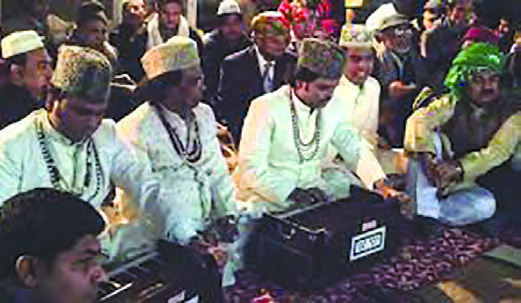<figcaption>Figure fig_ch02_p035_02 (Page 35)</figcaption></figure>
  <div class="page-content">
    <p>35<br>Medieval India: Cultural Movements<br>Sufism is an Islamic devotional movement which originated in Central Asia. The <br>rulers here began to pay more attention to worldly pleasures like wealth, power and <br>luxurious life. It was against such <br>trends that the Sufi movement <br>emerged. The Sufi movement <br>reached India by the 12th century <br>CE. Among the twelve Sufi sects <br>known as Silsilahs, the Chishti <br>and Suhrawardi silsilahs reached <br>India.<br>The Sufi masters were the ones <br>who gave importance to spiritual <br>life abstaining from luxurious life. The Sufi master was called Pir (Sheikh) and his <br>followers were called Murid.<br>The Khanqahs where the Sufis reside were the social centres of the time. Qawwalis <br>are devotional songs rendered in a special chanting style called Sama in the Sufi <br>centres. During the Sultanate and Mughal periods, Sufis were able to bring about <br>unity among different religious sects.<br>Major Sufi masters in India and the regions related to them are given below.<br>Prominent Sufi Masters<br>Regions<br>Sheikh Shihabuddin Suhrawardi<br>Sylhet<br>Sheikh Nizamuddin Auliya<br>Delhi<br>Khwaja Moinuddin Chishti<br>Ajmer<br>Prepare the information required to make a flip book on Sufi <br>movement in the format of a flip page.<br>Fig. 2.9 <br>Qawwali in front of the Dargah of Nizamuddin Auliya</p>
  </div>
</section>
<section class="page-section" id="page-36">
  <div class="page-header"><span class="page-number">Page 36</span></div>
  <figure class="diagram-card" id="fig_ch02_p036_01"><figcaption>Figure fig_ch02_p036_01 (Page 36)</figcaption></figure>
  <figure class="diagram-card" id="fig_ch02_p036_02"><figcaption>Figure fig_ch02_p036_02 (Page 36)</figcaption></figure>
  <figure class="diagram-card" id="fig_ch02_p036_03"><figcaption>Figure fig_ch02_p036_03 (Page 36)</figcaption></figure>
  <div class="page-content">
    <p>- Part 1<br>36<br>VII<br>Social Science<br>Sufis were those <br>who accepted <br>devotion as a <br>means to <br>approach <br>God<br>Sufi scholars <br>thought that one of <br>the ways to <br>access <br>God was <br>devotional <br>singing.<br>Growth of Vernacular Languages<br>Bhakti-Sufi propagators used vernacular languages to spread their ideas among <br>common people. This led to the growth of regional languages. Many devotional <br>poems were composed in languages like Tamil, Punjabi, Bengali, Marathi, Telugu, <br>Kannada, Malayalam etc. Many other literary works in vernacular languages were <br>also composed. Urdu, a combination of Persian and Hindi, is an example of India&#x27;s <br>cultural integration. Amir Khusru was one of the the most prominent writers of <br>the Urdu language during this period. Kabir&#x27;s dohas enriched the Hindi language. <br>&#x27;Mahabharata&#x27;, &#x27;Ramayana&#x27; and other works have been translated into various <br>regional languages. This led to the rejuvenation of language and literature. <br>Major literary works and authors in vernacular languages<br>Vernacular <br>language<br>Literary work<br>Author<br>Tamil<br>Nalayira Divyaprabandham <br>Thirumuraikal<br>Alvars <br>Nayanars<br>Kannada<br>Vachanas<br>Basavanna, Akka Mahadevi, <br>Allama Prabhu<br>Telugu<br>Translation of Mahabharata<br>Nannayya, Thikanna, Yarapragada<br>Bengali<br>Gita Govinda<br>Jayadeva<br>Hindi<br>Padmavat<br>Malik Muhammad Jaisi<br>Malayalam<br>Jnanappana <br>Adhyatmaramayanam Kilippattu <br>Muhyudheen Mala<br>Poonthanam <br>Thunchath Ramanujan Ezhuthachan <br> Qasi Muhammad<br>Prepare a note on how the Bhakti movement helped in growing <br>vernacular languages?</p>
  </div>
</section>
<section class="page-section" id="page-37">
  <div class="page-header"><span class="page-number">Page 37</span></div>
  <figure class="diagram-card" id="fig_ch02_p037_01"><figcaption>Figure fig_ch02_p037_01 (Page 37)</figcaption></figure>
  <figure class="diagram-card" id="fig_ch02_p037_02"><figcaption>Figure fig_ch02_p037_02 (Page 37)</figcaption></figure>
  <div class="page-content">
    <p>37<br>Medieval India: Cultural Movements<br>Influence of Bhakti-Sufi ideas<br>What were the changes happened in the society as a result of Bhakti Sufi movements? <br>Observe the given illustration.<br>Religious <br>tolerance<br>Attitude against caste <br>discrimination<br>Influence of <br>Bhakti-Sufi ideas<br>Attitude to question <br>imposed customs<br>Add more ideas...<br>The medieval Indian society was characterised by severe hierarchial issues and <br>social inequalities. The political and social conditions of that time were discussed in <br>the previous chapter. In this context, Bhakti-Sufi movements have played a critical <br>role in reducing conflicts, bringing people together and creating an atmosphere of <br>peace and harmony. These movements were successful in bringing the ideas of <br>different religions to the common people. The influence of Bhakti and Sufi ideas <br>helped people belonging to different castes and religions to co-exist. The hallmarks <br>of modern Indian society such as communal harmony, unity in diversity, fraternity, <br>equality and pluralism have evolved from the influence of Bhakti-Sufi movements.<br>Extended Activities<br>l Organise a discussion on how the Bhakti-Sufi movements contributed to the <br>emergence of a syncretic culture in modern India.<br>l &#x27;Ideas and Messages of Basavanna&#x27; - Prepare and present a skit and add the <br>script to the school wiki.</p>
  </div>
</section>
<section class="page-section" id="page-38">
  <div class="page-header"><span class="page-number">Page 38</span></div>
  <figure class="diagram-card" id="fig_ch02_p038_01">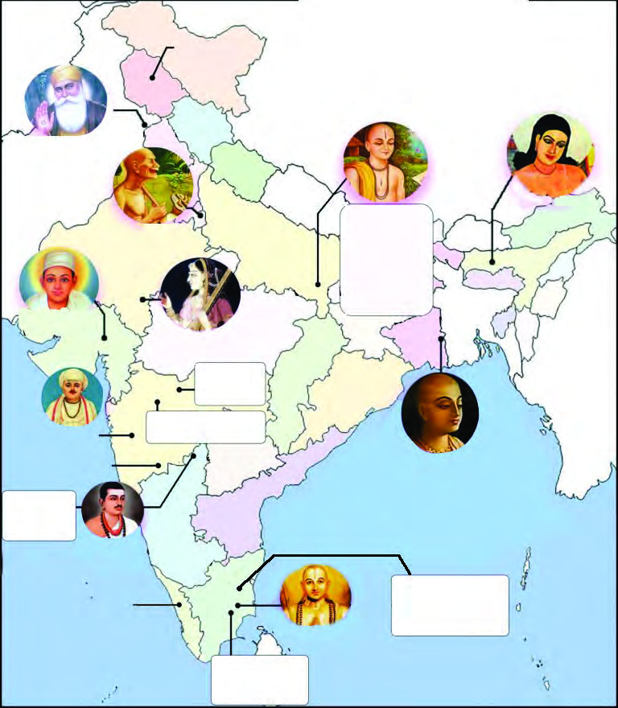<figcaption>Figure fig_ch02_p038_01 (Page 38)</figcaption></figure>
  <div class="page-content">
    <p>- Part 1<br>38<br>VII<br>Social Science<br>l Prepare an edition/digital album with images and ideas of Bhakti-Sufi propagators <br>with the help of the map given below<br>Fig. 2.10 <br>Major Bhakti-Sufi propagators who lived in medieval India<br>Guru Nanak<br>(15-16th C.)<br>Dadu Dayal<br>(16-17th C)<br>Mirabai<br>(15-16th C)<br>Tukaram<br>(17th C)<br>Basavanna<br>(12th C)<br>Ramanujacharya<br>(12th C)<br>Chaitanya<br>Mahaprabhu<br>(15-16th C)<br>14th C<br>• Ramananda<br>15th C<br>• Tulsidas<br>• Kabirdas<br>16th C<br>• Vallabhacharya<br>• Raidas<br>Vira Shaivas-<br>• Allama <br>   Prabhu<br>• Akka <br>   Mahadevi<br>Surdas<br>(16th C)<br>Shankardeva<br>(15th C)<br>Sheikh <br>Nizamuddin <br>Auliya<br>(13-14th C)<br>Lal Ded<br>(14th C.)<br>Khwaja <br>Moinuddin <br>Chishti<br>(14th C)<br>Major Bhakti Sufi <br>propagators of <br>Medieval India<br>Sheikh <br>Shihabuddin <br>Suhrawardi<br>(12th C)<br>16th C<br>Eknath<br>14th C<br>Chokkamela<br>7th C <br>Nayanars:<br>• Appar<br>• Sambandar<br>9th C <br>Alvars<br>• Periyalvar<br>• Nammalvar<br>• Andal<br>9th C <br>Kulasekhara<br>Alvar</p>
  </div>
</section>
    </main>
    <footer>
      <div class="nav-bar"><a href="part_1_pages_124.html">← Pages 1-24</a><a href="index.html">☰ Index</a><a href="part_1_pages_3953.html">Pages 39-53 →</a></div>
    </footer>
  </div>
</body>
</html>
